开始
npm install -g hexo-cli # 安装hexo
hexo init myBlog # 初始化服务 如果报错在 隐私和安全->开发者选项->Powershell打开策略
# 进入服务文件夹
hexo s # 启动预览服务(hexo server)
hexo n [layout] <title> # layout(布局) title(标题)
hexo g # 生成网页(hexo generate)
hexo server -p 5000 # 指定端口
hexo new page "pagename" # 新建文件夹配置
主题下载
git clone https://github.com/blinkfox/hexo-theme-matery.git主配置文件
_config.yml
-
主题修改
-
url修改( 如：http://xxx.github.io) -
per_page修改为6的倍数 -
language设置中文
theme: hexo-theme-matery
url: http://example.com
index_generator:
path: ''
per_page: 12
order_by: -date
language: zh-CN高亮代码
根目录_config.yml
syntax_highlighter: prismjs # hexo7.0之后配置调整
highlight:
enable: false
line_number: true
auto_detect: false
tab_replace: ''
wrap: true
hljs: false
prismjs:
enable: true
preprocess: true
line_number: true
tab_replace: ''代码样式下载prismjs下载页面
然后将css文件取名为prism.min.css, 替换themes/hexo-theme-matery/source/libs/prism/prism.min.css 文件
代码语言 标签隐藏, 在prism.min.css文件新增配置
/*隐藏代码语言*/
.code_lang {
visibility: hidden;
}导航栏文件夹配置
新建 categories 页
categories页是用来展示所有分类的页面, 新建命令
hexo new page "categories"编辑页面文件/source/categories/index.md
---
title: categories
date: 2018-09-30 17:25:30
type: "categories"
layout: "categories"
---新建标签 tags 页
tags 页是用来展示所有标签的页面, 新建命令
hexo new page "tags"编辑页面文件 /source/tags/index.md
---
title: tags
date: 2018-09-30 18:23:38
type: "tags"
layout: "tags"
---新建关于我 about 页
about 页是用来展示关于我和我的博客信息的页面
hexo new page "about"编辑页面文件 /source/about/index.md
---
title: about
date: 2018-09-30 17:25:30
type: "about"
layout: "about"
---新建 404 页
新建命令
hexo new page 404编辑页面文件 /source/404/index.md
---
title: 404
date: 2018-09-30 17:25:30
type: "404"
layout: "404"
description: "Oops～，我崩溃了！找不到你想要的页面 :("
---搜索
安装插件
npm install hexo-generator-search --save根目录下的 _config.yml 文件新增配置
search:
path: search.xml
field: post中文链接转拼音(建议安装)
如果文章名称是中文的，那么 Hexo 默认生成的永久链接也会有中文，这样不利于 SEO，且 gitment 评论对中文链接也不支持。我们可以用 hexo-permalink-pinyin Hexo 插件使在生成文章时生成中文拼音的永久链接。
npm i hexo-permalink-pinyin --save根目录下的 _config.yml 文件新增配置
permalink_pinyin:
enable: true
separator: '-' # default: '-'注：除了此插件外，hexo-abbrlink 插件也可以生成非中文的链接。
文章字数统计插件（建议安装）
如果想要在文章中显示文章字数、阅读时长信息，可以安装 hexo-wordcount插件。
安装命令如下：
npm i --save hexo-wordcount然后只需在本主题下的 _config.yml 文件中，将各个文章字数相关的配置激活即可：
postInfo:
date: true
update: false
wordCount: false # 设置文章字数统计为 true.
totalCount: false # 设置站点文章总字数统计为 true.
min2read: false # 阅读时长.
readCount: false # 阅读次数.修改页脚
页脚信息可能需要做定制化修改，而且它不便于做成配置信息，所以可能需要你自己去再修改和加工。修改的地方在主题文件的 /layout/_partial/footer.ejs 文件中，包括站点、使用的主题、访问量等。
添加中文繁简转换
在主题的 _config.yml 文件中，开启 translate 为 enable。
开启中文繁简转换如下修改。默认不开启。 实例演示： 繁简转换 底下 footer 栏
translate:
enable: true修改社交链接
在主题的 _config.yml 文件中，默认支持 QQ、GitHub 和邮箱等的配置，你可以在主题文件的 /layout/_partial/social-link.ejs 文件中，新增、修改你需要的社交链接地址，增加链接可参考如下代码：
<% if (theme.socialLink.github) { %>
<a href="<%= theme.socialLink.github %>" class="tooltipped" target="_blank" data-tooltip="访问我的GitHub" data-position="top" data-delay="50">
<i class="fab fa-github"></i>
</a>
<% } %>其中，社交图标（如：fa-github）你可以在 Font Awesome 中搜索找到。以下是常用社交图标的标识，供你参考：
- Facebook:
fab fa-facebook - Twitter:
fab fa-twitter - Google-plus:
fab fa-google-plus - Linkedin:
fab fa-linkedin - Tumblr:
fab fa-tumblr - Medium:
fab fa-medium - Slack:
fab fa-slack - Sina Weibo:
fab fa-weibo - Wechat:
fab fa-weixin - QQ:
fab fa-qq - Zhihu:
fab fa-zhihu
本地图片链接配置
此处以Typora搭配使用
Typora图像设置
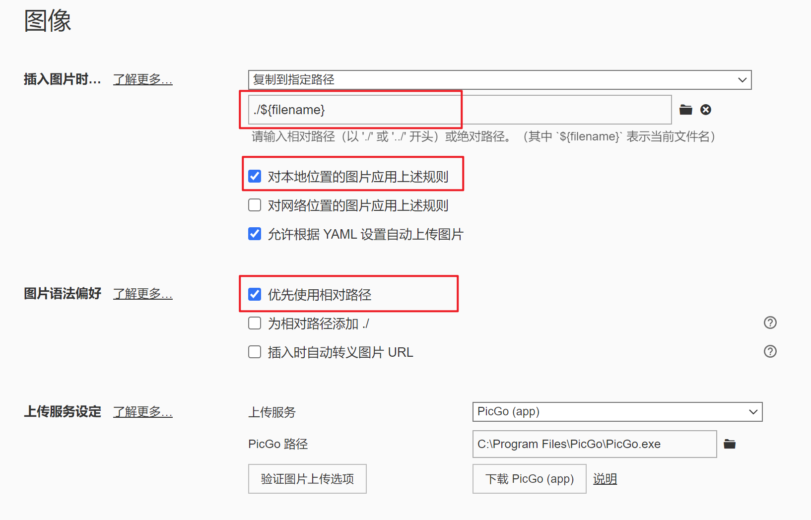
hexo插件
npm i hexo-renderer-marked_config添加配置
marked:
prependRoot: true
postAsset: true文章标签添加, 使用Typora引用方式
typora-root-url: {{ title }}部署
hexo d # 一键部署(hexo deploy)部署前, _config.yml配置参数
deploy:
type: git
repo: https://github.com/xxx/xxx.git # github仓库发布地址
branch: gh-pages # 发布分支GitHub Pages
-
关联仓库与源码
-
将
publish/加入.ignore -
node --version查看node版本 -
创建文件
.github/workflows/pages.yml -
GitHub - Pages设置
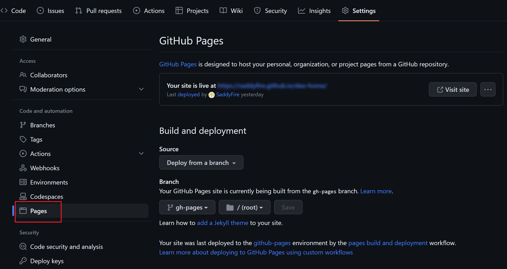
Vercel 加速
-
绑定GitHub项目
-
Domain设置
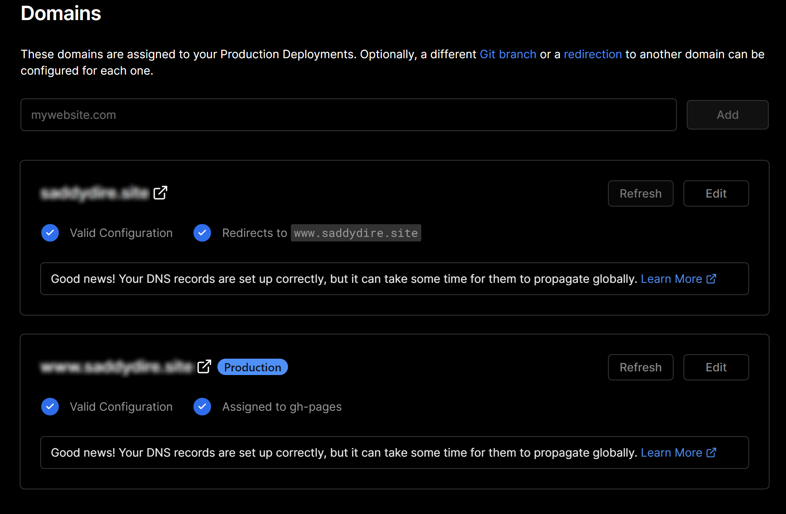
-
阿里云添加域名解析
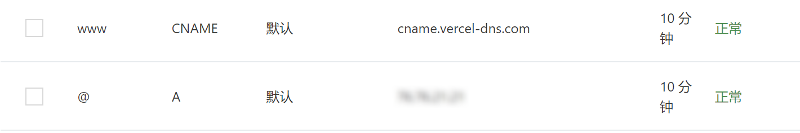
参考自:
图床设置
七牛云+阿里云+Typora
-
七牛云对象存储 - 新建空间 - 域名配置
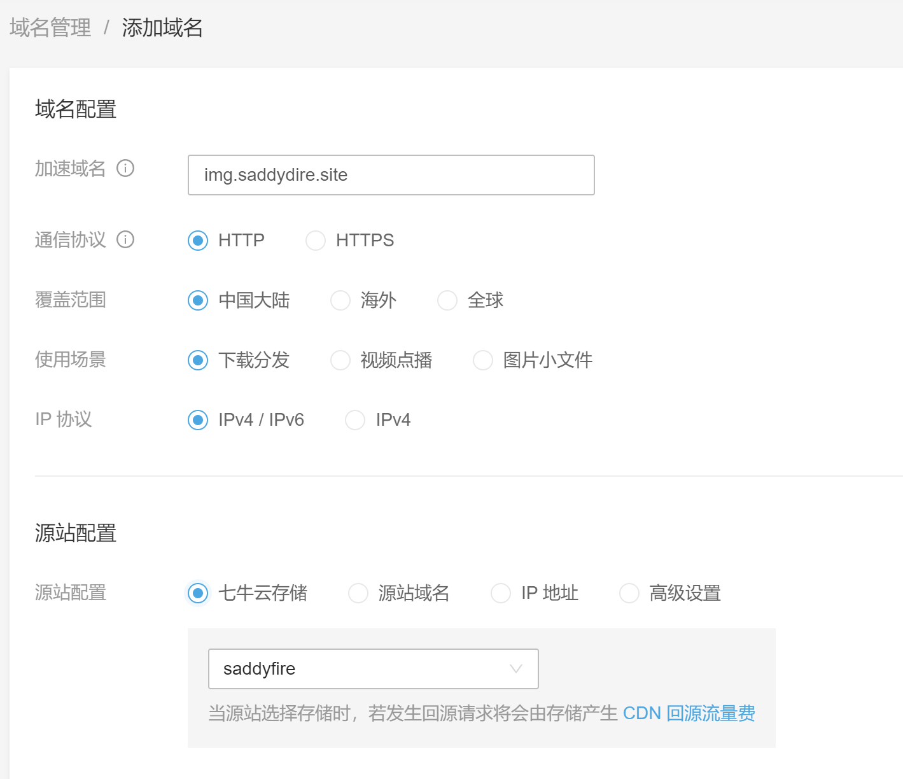
-
阿里云添加域名解析
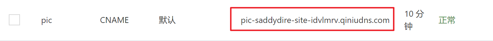 -
picgo的下载与配置
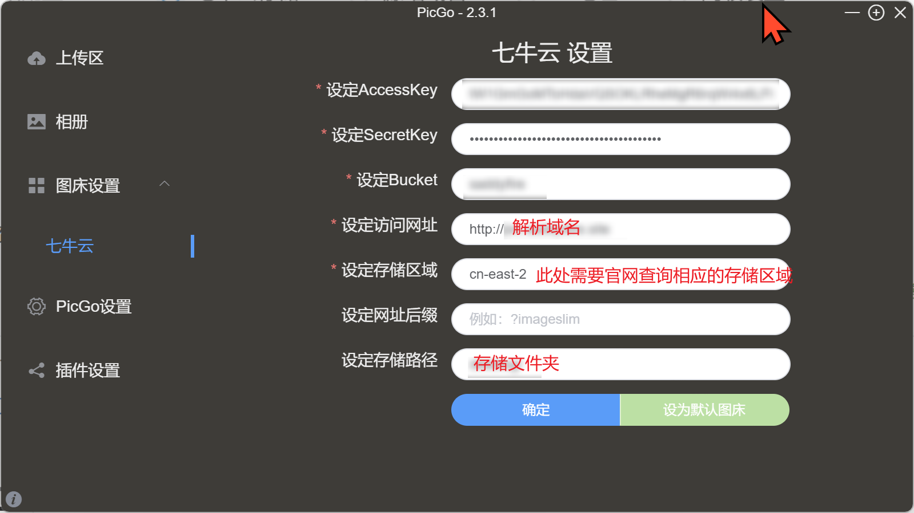
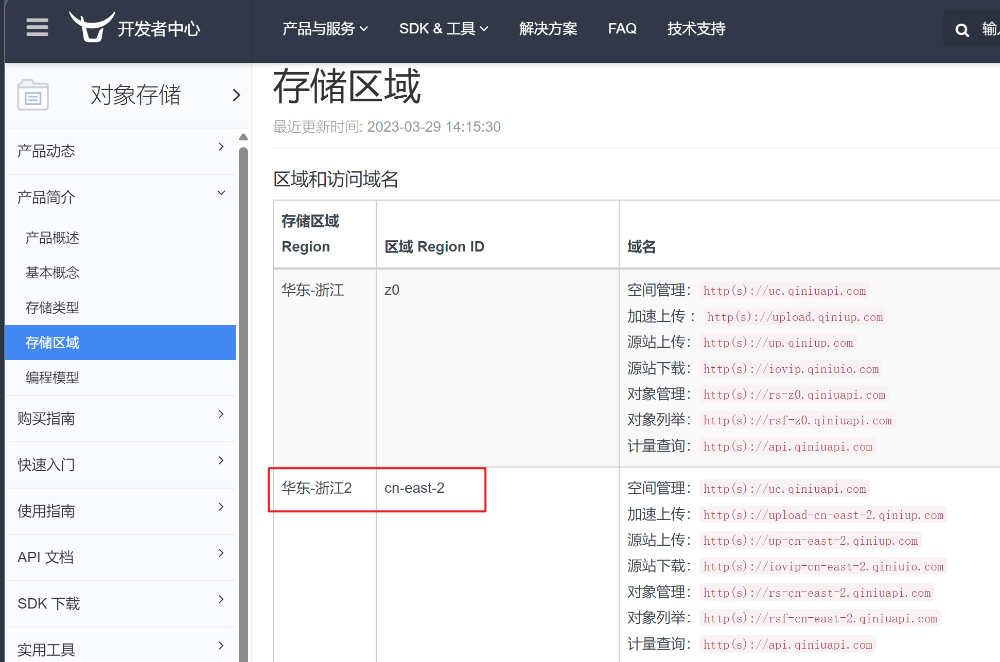
-
Typora图片设置
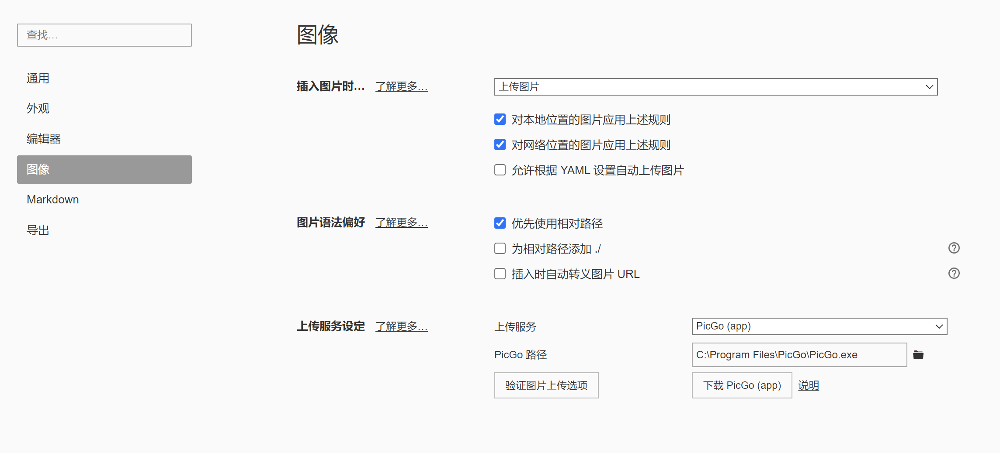
此时点击验证图片上传选项测试是否可以配置成功. 但是由于默认情况下PicGo会将图片都放在一个目录下, 因此需要安装前缀插件
在插件设置中搜索
super-prefix下载插件
配置插件后重启, 再次测试上传目录
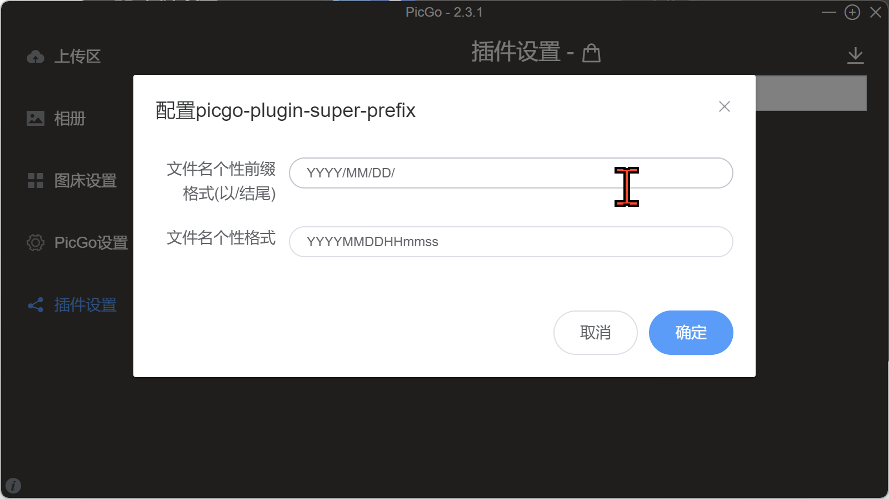
图床SSL配置
由于网站是https服务, 图床的链接是http, 因此页面部署后请求图片url会将http升级为https而导致图片无法加载, 因此要在七牛云配置SSL证书
-
阿里云证书申请
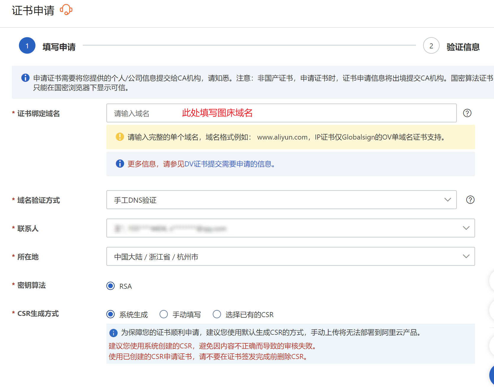 -
添加域名解析, 下载证书
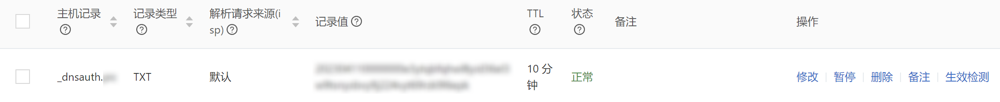
-
七牛云上传证书(SSL证书 - 上传自有证书), 部署证书
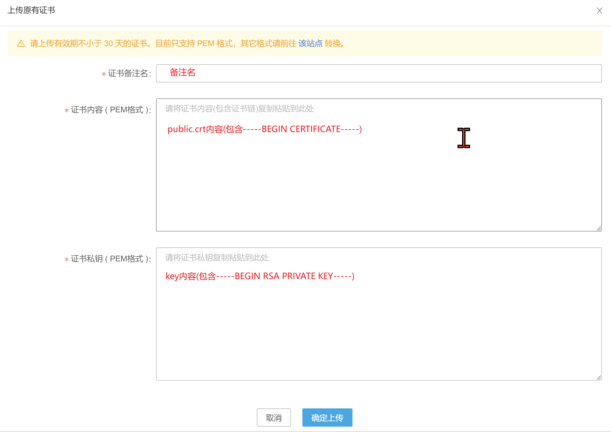
自定义主题
本章节均搬运自其他文章、博客并加以整合成自己样式, 在此仅作为参考
修改导航栏颜色、蒙版等
文件themes/hexo-theme-matery/source/css/matery.css
/*导航栏, 底部栏颜色*/
.bg-color {
background-image: linear-gradient(to right, #2b2d30 0%, #2b2d30 100%);
}
.text-color {
color: #2b2d30 !important;
}
/*底部进度条*/
.progress-bar {
height: 4px;
position: fixed;
bottom: 0;
z-index: 300;
background: linear-gradient(to right, #bf4a30 0%, #9d3a0f 100%);
opacity: 0.8;
}
/*蒙版特效(可注释关闭)*/
.bg-cover:after {
-webkit-animation: rainbow 60s infinite;
animation: rainbow 60s infinite;
}
.bg-cover:before,
.bg-cover:after {
position: absolute;
z-index: 1;
width: 100%;
height: 100%;
display: block;
left: 0;
top: 0;
content: "";
}
/* 滚动条 */
::-webkit-scrollbar-thumb {
background-color: #FF2A68;
background-image: -webkit-linear-gradient(45deg,rgba(255,255,255,.4) 25%,transparent 25%,transparent 50%,rgba(255,255,255,.4) 50%,rgba(255,255,255,.4) 75%,transparent 75%,transparent);
border-radius: 3em;
}
::-webkit-scrollbar-track {
background-color: #ffcacaff;
border-radius: 3em;
}
::-webkit-scrollbar {
width: 8px;
height: 15px;
}改完导航栏后继续更改其他组件绿色
全局替换 #429b83 为 #cc1212
浅绿 #4cbf30 为 #2b2d30
深绿 #0f9d58 为 #2b2d30
参考自:
副标题引用一言及打字机样式
全局搜索span id="subtitle" 可定位到打字机代码 themes/hexo-theme-matery/layout/_partial/bg-cover-content.ejs
新增逻辑如下:
<!-- 一言 -->
<% if (theme.hitokoto.enable) { %>
<span id="hitokoto" style="font-size: 20px;"></span>
<!-- 打字机 -->
<script src="https://cdn.jsdelivr.net/npm/typed.js@2.0.11"></script>
<script src="https://cdn.jsdelivr.net/npm/bluebird@3/js/browser/bluebird.min.js"></script>
<script src="https://cdn.jsdelivr.net/npm/whatwg-fetch@2.0.3/fetch.min.js"></script>
<script>
var hitokotoContent = ''
function typed(hitokotoContent) {
var typed = new Typed("#hitokoto", {
strings: [
hitokotoContent
],
startDelay: <%= theme.hitokoto.startDelay %>,
typeSpeed: <%= theme.hitokoto.typeSpeed %>,
loop: <%= theme.hitokoto.loop %>,
backSpeed: <%= theme.hitokoto.backSpeed %>,
showCursor: <%= theme.hitokoto.showCursor %>
});
}
async function hitokoto() {
hitokotoContent = await fetch('https://v1.hitokoto.cn')
.then(function (res) {
return res.json();
})
.then(function (data) {
return (
`<div>『${data.hitokoto}』<div/>` +
`<div style="text-align: right; font-size: smaller"> ——「${data.from}」</div>`
);
})
.catch(function (err) {
console.error(err);
})
await typed(hitokotoContent)
}
hitokoto()
</script>
<% } else { %>主题配置themes/hexo-theme-matery/_config.yml 添加打字机配置
# 一言
hitokoto:
enable: true
loop: true # 是否循环
showCursor: true # 是否显示光标
startDelay: 300 # 开始延迟
typeSpeed: 130 # 打字速度
backSpeed: 50 # 删除速度搬运自:
2023-10-21 更新: 解决 cdn.jsdelivr.net 无法访问
# 一、 将 cdn.jsdelivr.net ==替换为==> fastly.jsdelivr.net
# 二、 本地替代
# 1. 分别下载以下三个工具包
# https://github.com/mattboldt/typed.js/releases
# https://github.com/petkaantonov/bluebird/releases
# https://github.com/github/fetch/releases
# 2. 压缩
npm i uglify-js -g # 安装压缩包
uglifyjs fetch.js -o fetch.min.js -c # 压缩
# 3. 将文件放置 主题文件夹/source/js 文件夹
# 4. 更改script脚本路径
<script src="/js/typed.min.js"></script>
<script src="/js/bluebird.min.js"></script>
<script src="/js/fetch.min.js"></script>自动切换黑夜模式
如果用户手动点击切换则不再进行自动切换
切换按钮添加逻辑: themes/hexo-theme-matery/layout/_widget/day-night.ejs
function switchNightMode() {
$('<div class="Cuteen_DarkSky"><div class="Cuteen_DarkPlanet"></div></div>').appendTo($('body')),
setTimeout(function () {
// 如果用户点击切换则进行标记
localStorage.setItem('manualDark','0') //添加一行
$('body').hasClass('DarkMode')
? ($('body').removeClass('DarkMode'), localStorage.setItem('isDark', '0'), $('#sum-moon-icon').removeClass("fa-sun").addClass('fa-moon'))
: ($('body').addClass('DarkMode'), localStorage.setItem('isDark', '1'), $('#sum-moon-icon').addClass("fa-sun").removeClass('fa-moon')),
setTimeout(function () {
$('.Cuteen_DarkSky').fadeOut(1e3, function () {
$(this).remove()
})
}, 2e3)
})
}在 themes/hexo-theme-matery/layout/layout.ejs 代码<%- partial('_widget/day-night') %> 下面(可选)添加
<script>
//自动切换夜间模式
if (!localStorage.getItem('manualDark')){
// 当前主题是否为夜间模式
let isDark = localStorage.getItem("isDark");
// 当前时间是否为夜间
let isNight = (new Date().getHours() >= 20 || new Date().getHours() < 7)
// 夜间但不是夜间模式
if (isNight && !isDark) {
$('body').addClass('DarkMode')
localStorage.setItem('isDark', '1')
$('#sum-moon-icon').addClass("fa-sun").removeClass('fa-moon')
}
// 不是夜间但是夜间模式
if (!isNight && isDark) {
$('body').removeClass('DarkMode')
localStorage.setItem('isDark', '0')
$('#sum-moon-icon').removeClass("fa-sun").addClass('fa-moon')
}
}
</script>参考自:
页面加载动画
-
结构代码
新建
themes/hexo-theme-matery/layout/_widget/loading.ejs文件<% if (theme.preloader.enable) { %> <div id="loading-box"> <div class="loading-left-bg"></div> <div class="loading-right-bg"></div> <div class="spinner-box"> <div class="configure-border-1"> <div class="configure-core"></div> </div> <div class="configure-border-2"> <div class="configure-core"></div> </div> <div class="loading-word">玩命加载中🤣🤣🤣</div> </div> </div> <!-- 页面加载动画 --> <script> $(document).ready(function () { document.body.style.overflow = 'auto'; document.getElementById('loading-box').classList.add("loaded") }) </script> <% } %> -
样式代码
新建
themes/hexo-theme-matery/source/css/loading.css文件#loading-box .loading-left-bg, #loading-box .loading-right-bg { position: fixed; z-index: 1000; width: 50%; height: 100%; background-color: #37474f; transition: all 0.5s; } #loading-box .loading-right-bg { right: 0; } #loading-box>.spinner-box { position: fixed; z-index: 1001; display: flex; justify-content: center; align-items: center; width: 100%; height: 100vh; } #loading-box .spinner-box .configure-border-1 { position: absolute; padding: 3px; width: 115px; height: 115px; background: #ffab91; animation: configure-clockwise 3s ease-in-out 0s infinite alternate; } #loading-box .spinner-box .configure-border-2 { left: -115px; padding: 3px; width: 115px; height: 115px; background: rgb(63, 249, 220); transform: rotate(45deg); animation: configure-xclockwise 3s ease-in-out 0s infinite alternate; } #loading-box .spinner-box .loading-word { position: absolute; color: #ffffff; font-size: 0.8rem; } #loading-box .spinner-box .configure-core { width: 100%; height: 100%; background-color: #37474f; } div.loaded div.loading-left-bg { transform: translate(-100%, 0); } div.loaded div.loading-right-bg { transform: translate(100%, 0); } div.loaded div.spinner-box { display: none !important; } @keyframes configure-clockwise { 0% { transform: rotate(0); } 25% { transform: rotate(90deg); } 50% { transform: rotate(180deg); } 75% { transform: rotate(270deg); } 100% { transform: rotate(360deg); } } @keyframes configure-xclockwise { 0% { transform: rotate(45deg); } 25% { transform: rotate(-45deg); } 50% { transform: rotate(-135deg); } 75% { transform: rotate(-225deg); } 100% { transform: rotate(-315deg); } } -
将加载动画添加至页面
找到
themes>hexo-theme-matery>layout>_partial>head.ejs文件，这个文件专门用来引入样式文件和配置网页信息在
<head>标签中引入 loading.css 文件<link rel="stylesheet" type="text/css" href="<%- theme.jsDelivr.url %><%- url_for('/css/loading.css') %>">引入样式文件后，引入结构文件 loading.ejs，插入在
themes>hexo-theme-matery>layout>layout.ejs<body>标签下第一行就行了<%- partial('_widget/loading') %> -
主题配置中
_config.yml添加配置# 是否开启页面加载动画 preloader: enable: true
搬运自:
文章 Front-matter 介绍
Front-matter 选项详解
Front-matter 选项中的所有内容均为非必填的。但我仍然建议至少填写 title 和 date 的值。
| 配置选项 | 默认值 | 描述 |
|---|---|---|
| title | Markdown 的文件标题 |
文章标题，强烈建议填写此选项 |
| date | 文件创建时的日期时间 | 发布时间，强烈建议填写此选项，且最好保证全局唯一 |
| author | 根 _config.yml 中的 author |
文章作者 |
| img | featureImages 中的某个值 |
文章特征图，推荐使用图床(腾讯云、七牛云、又拍云等)来做图片的路径.如: http://xxx.com/xxx.jpg |
| top | true |
推荐文章（文章是否置顶），如果 top 值为 true，则会作为首页推荐文章 |
| hide | false |
隐藏文章，如果hide值为true，则文章不会在首页显示 |
| cover | false |
v1.0.2版本新增，表示该文章是否需要加入到首页轮播封面中 |
| coverImg | 无 | v1.0.2版本新增，表示该文章在首页轮播封面需要显示的图片路径，如果没有，则默认使用文章的特色图片 |
| password | 无 | 文章阅读密码，如果要对文章设置阅读验证密码的话，就可以设置 password 的值，该值必须是用 SHA256 加密后的密码，防止被他人识破。前提是在主题的 config.yml 中激活了 verifyPassword 选项 |
| toc | true |
是否开启 TOC，可以针对某篇文章单独关闭 TOC 的功能。前提是在主题的 config.yml 中激活了 toc 选项 |
| mathjax | false |
是否开启数学公式支持 ，本文章是否开启 mathjax，且需要在主题的 _config.yml 文件中也需要开启才行 |
| summary | 无 | 文章摘要，自定义的文章摘要内容，如果这个属性有值，文章卡片摘要就显示这段文字，否则程序会自动截取文章的部分内容作为摘要 |
| categories | 无 | 文章分类，本主题的分类表示宏观上大的分类，只建议一篇文章一个分类 |
| tags | 无 | 文章标签，一篇文章可以多个标签 |
| keywords | 文章标题 | 文章关键字，SEO 时需要 |
| reprintPolicy | cc_by | 文章转载规则， 可以是 cc_by, cc_by_nd, cc_by_sa, cc_by_nc, cc_by_nc_nd, cc_by_nc_sa, cc0, noreprint 或 pay 中的一个 |
注意:
- 如果
img属性不填写的话，文章特色图会根据文章标题的hashcode的值取余，然后选取主题中对应的特色图片，从而达到让所有文章的特色图各有特色。date的值尽量保证每篇文章是唯一的，因为本主题中Gitalk和Gitment识别id是通过date的值来作为唯一标识的。- 如果要对文章设置阅读验证密码的功能，不仅要在 Front-matter 中设置采用了 SHA256 加密的 password 的值，还需要在主题的
_config.yml中激活了配置。有些在线的 SHA256 加密的地址，可供你使用：开源中国在线工具、chahuo、站长工具。- 您可以在文章md文件的 front-matter 中指定 reprintPolicy 来给单个文章配置转载规则
以下为文章的 Front-matter 示例。
最简示例
---
title: typora-vue-theme主题介绍
date: 2018-09-07 09:25:00
---最全示例
---
title: typora-vue-theme主题介绍
date: 2018-09-07 09:25:00
tags: [Typora, Markdown]
categories: [program]
author: author
img: /source/images/xxx.jpg
cover: true
coverImg: /images/1.jpg
password: 61503690505f84b144e6ac89124540a3eb8d22e77db76500984cfc50a1d8776e
reprintPolicy: cc_by_nc
hide: false
top: true
toc: false
mathjax: false
summary: 这是你自定义的文章摘要内容，如果这个属性有值，文章卡片摘要就显示这段文字，否则程序会自动截取文章的部分内容作为摘要
# 图片格式与typora一致
typora-root-url: {{ title }}
---